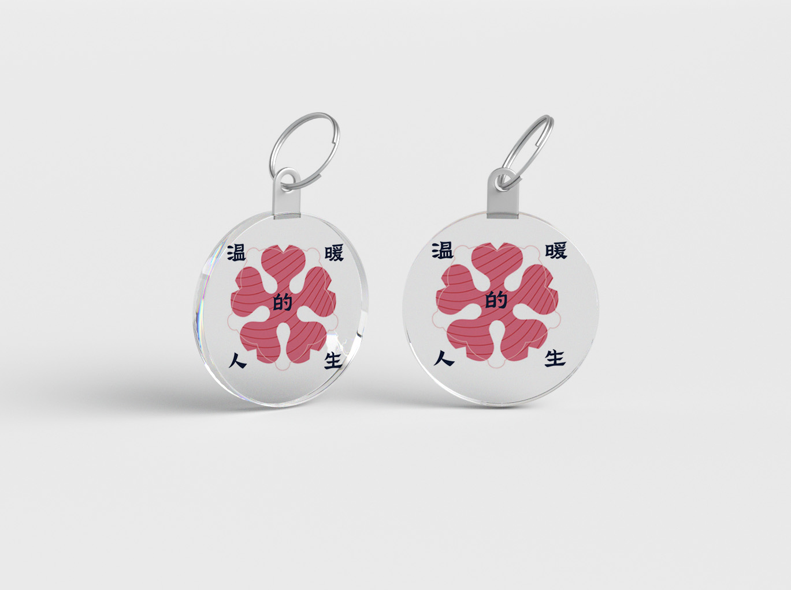
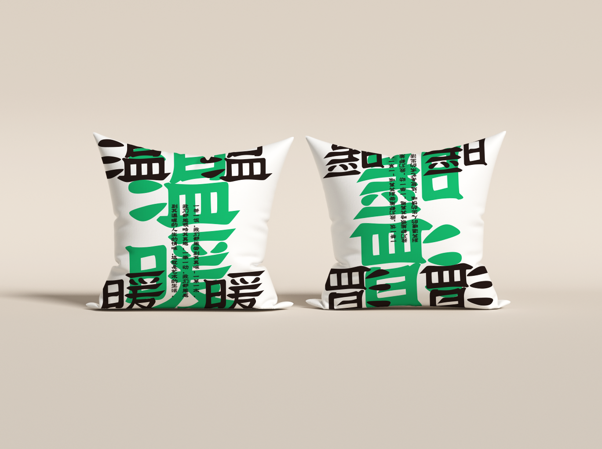
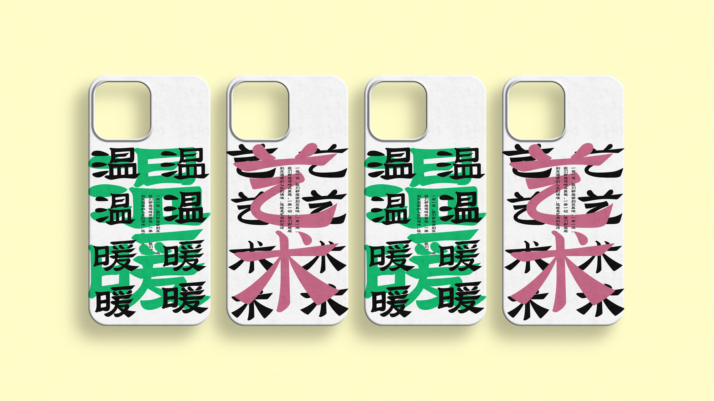
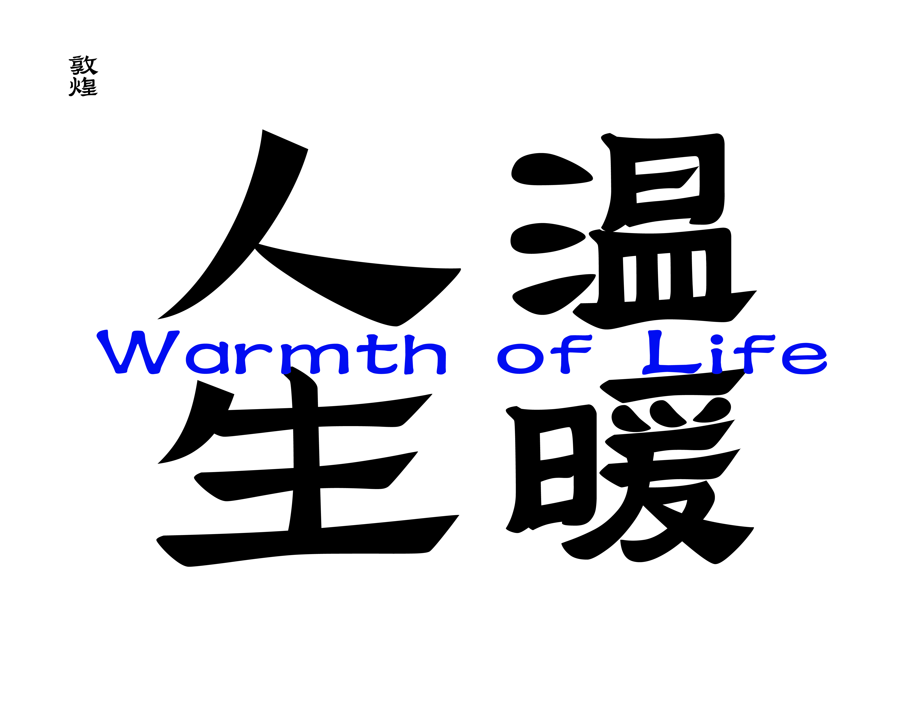
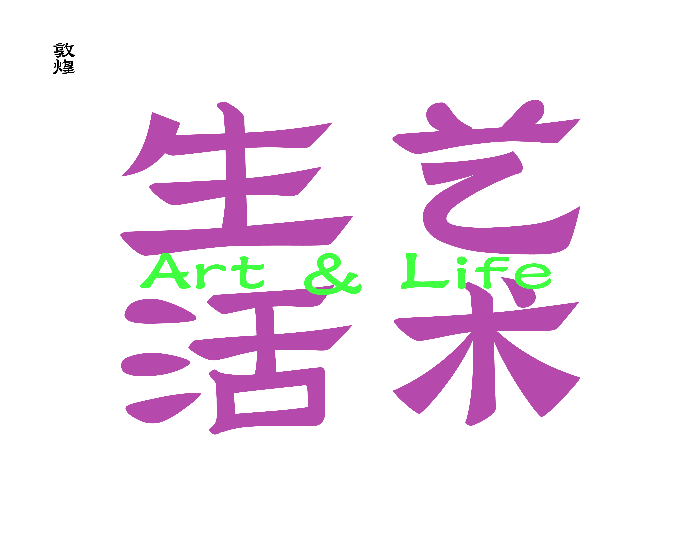
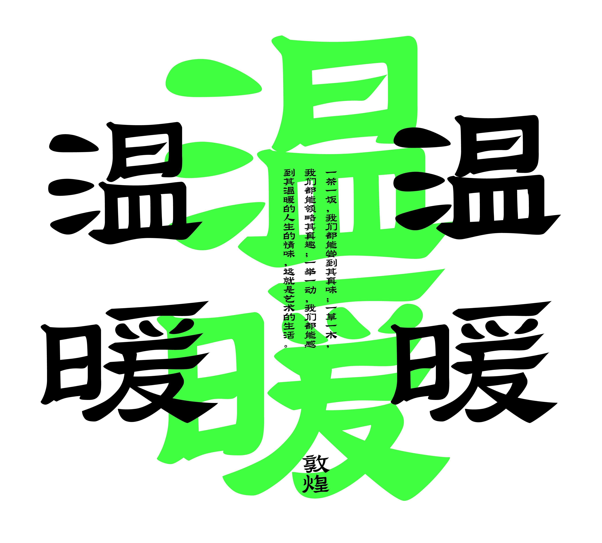
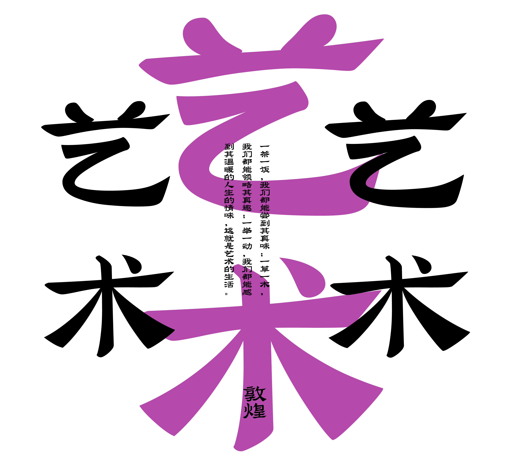
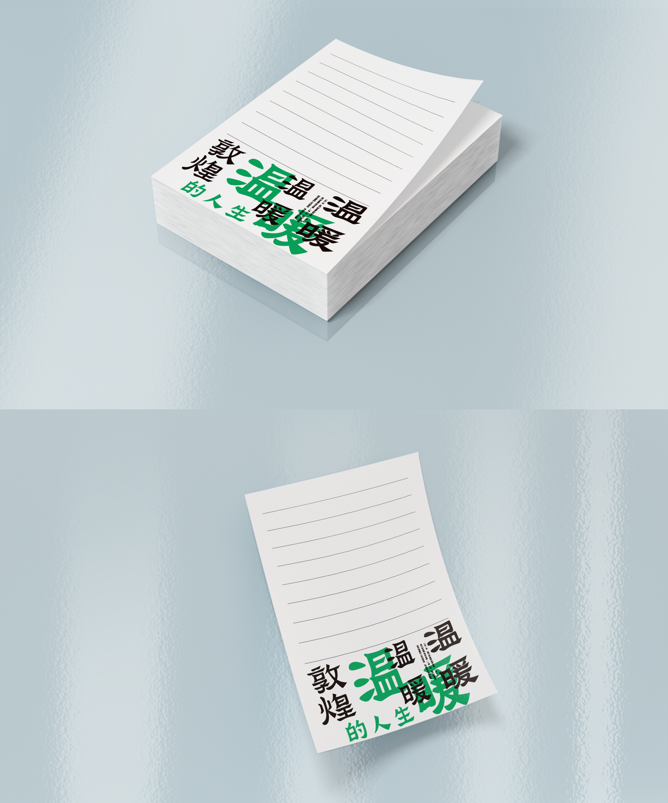

VARIABLE TYPE / 2025
敦煌马圈湾汉简隶书可变字体设计实践研究
传统书体 · 可变字体 · 设计实践RESEARCH ABSTRACT
以汉简隶书为起点，
重建传统书体的当代表达。
中华文化历史悠久，源远流长，这也是中华民族自立于世界民族之林的根本。敦煌文化作为中华传统文化的重要分支，它承担着敦煌地区独特的文化传承与民族记忆，在文化发展的现在仍然发挥着至关重要的作用。随着现代设计意识的转变与大众审美趣味的改变，敦煌地区的文化艺术特别是汉字艺术愈发精彩，同时传统文化的现代化传承与应用正在面临着诸多问题。因此，在“中国式现代化”的背景下，思考如何进行具有本土特色的设计话语体系建设，以改善中华优秀传统文化创造性转化、创新性发展，具有十分重要的现实意义。
文章以“敦煌文化”“可变字体”为背景，采用了文献研究法、实地调查法、个案研究法、问卷调查法等综合研究方法，对马圈湾汉简隶书做了详细的研究与分析。在前人研究的基础上，不断搜集与整理了大量的第一手图片与文字资料，并为马圈湾汉简隶书提供了设计策略与实践案例。
文章以马圈湾汉简隶书为例进行个案研究，共分为四个部分，第一部分首先介绍了敦煌汉简与马圈湾汉简历史背景与考古发现，将马圈湾汉简进行了梳理分析，为之后的马圈汉简隶书设计奠定了理论基础，同时确定研究基础。第二部分从隶书的发展演变为视角，针对马圈湾汉简隶书进行了现状总结与问题分析，确定了马圈湾汉简隶书的设计必要性与可行性。第三部分为马圈湾汉简隶书的设计提出现代式解决方案，通过对可变字体技术的引入，为下文设计实践提供研究方法与策略。第四部分对马圈湾汉简隶书进行设计，通过实践设计使马圈湾汉简隶书这一古老的书体在现代设计中赋予更多内涵与意义，从而为中文可变字体设计与传统书体的创意设计研究提供新思路与新路径。
通过此次马圈湾隶书可变字体设计实践研究，以理论为支撑、文化为导向、技术为动力，将传统文化与现代设计进行融合创作，设计出符合现代消费者审美需求的文创衍生品。笔者期望以创新设计实践的方式推动传统书体在现代设计生活中的传承与发展，提升人民群众对传统文化的认知，担当起中华文化复兴的光荣使命。
VARIABLE FONT DEMO
字体演示
通过动态演示呈现书体笔画、结构与字形变化之间的可变关系。
RESEARCH ARCHIVE
实践与应用
字体实验、视觉延展与文创应用构成研究的持续记录。









